为新生小白准备的从零开始Blog搭建
环境需要
域名
!!! hostname 阿里云腾讯云都可以，注册个号买个喜欢的域名，比如我的：xibai.xyz
本地本机环境
- Git
- nodejs
!!! local_env 以上两者在前文 环境配置 中有写。
云端博客环境
!!! blog_server 以下两者二选一或全选
可选：GitHub
注册账号，邮箱用自己的大号邮箱，权当大号用就行。因为未来你很可能也是GitHub重度用户之一
注册完毕之后，为博客新建一个仓库。
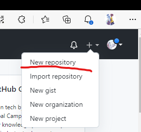
仓库命名：个人GitHub用户名.github.io.git
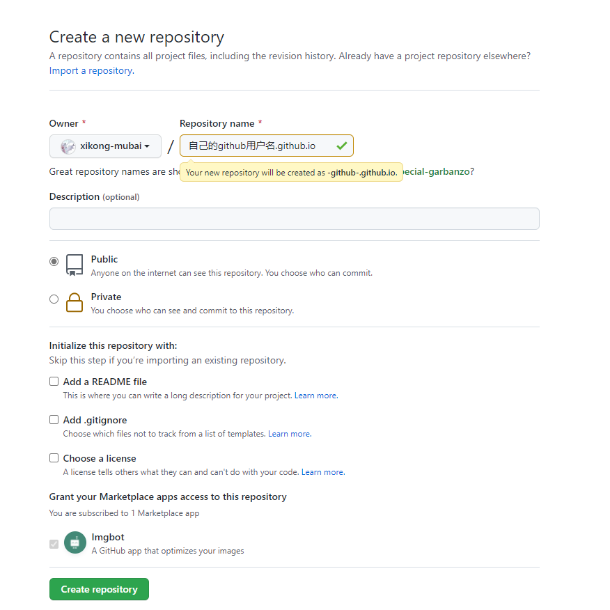
接下来打开终端，执行以下命令：
1 | ssh-keygen -c '你的 GitHub 邮箱地址' |
后面一路全按回车。执行完毕之后进入 C:\\Users\\你的电脑本地用户名\\.ssh 。
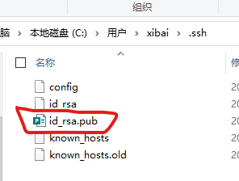
将pub文件中的内容复制粘贴，然后去GitHub的个人设置中，添加 SSH公钥 :
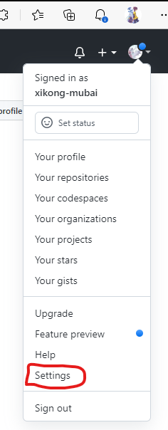
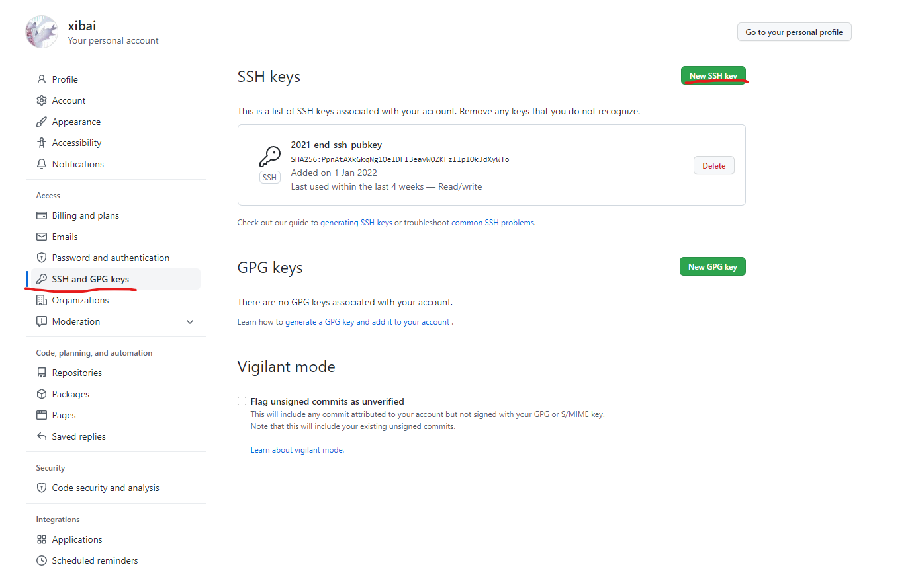
下图中 1 的位置是让你以后管理公钥的时候知道这个公钥是干啥的，就好比文件名or标签名，随便起，你能记住作用就行； 2 的位置粘贴刚刚复制的公钥内容，这里注意一下：如果邮箱末尾存在回车，就把这个末尾的回车删掉
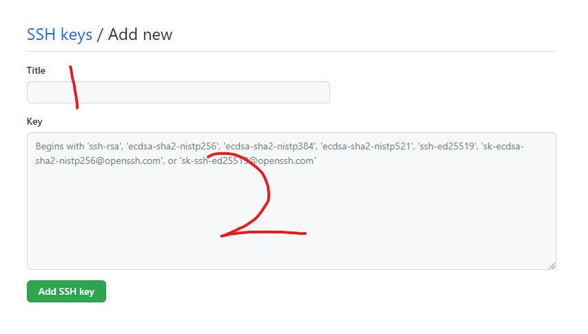
添加完公钥之后测试功能是否正常，打开终端，执行命令：ssh git@github.com 。如果是以下回显则说明功能正常：
1 | Hi 你的GitHub用户名! You've successfully authenticated, but GitHub does not provide shell access. |
为blog仓库配置自己购买的域名：
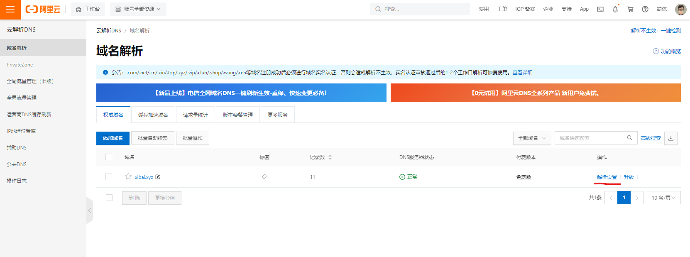
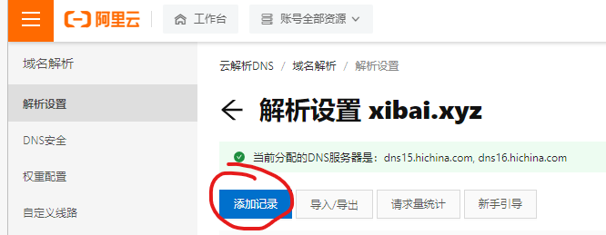
下图123的解析：
- 记录类型：选
CNAME - 主机记录：可以在你买的域名的基础上设置二级域名
- 记录值：你设置的域名所要解析到的目标主机（这里就是你的github的blog仓库：
你的github用户名.github.io）
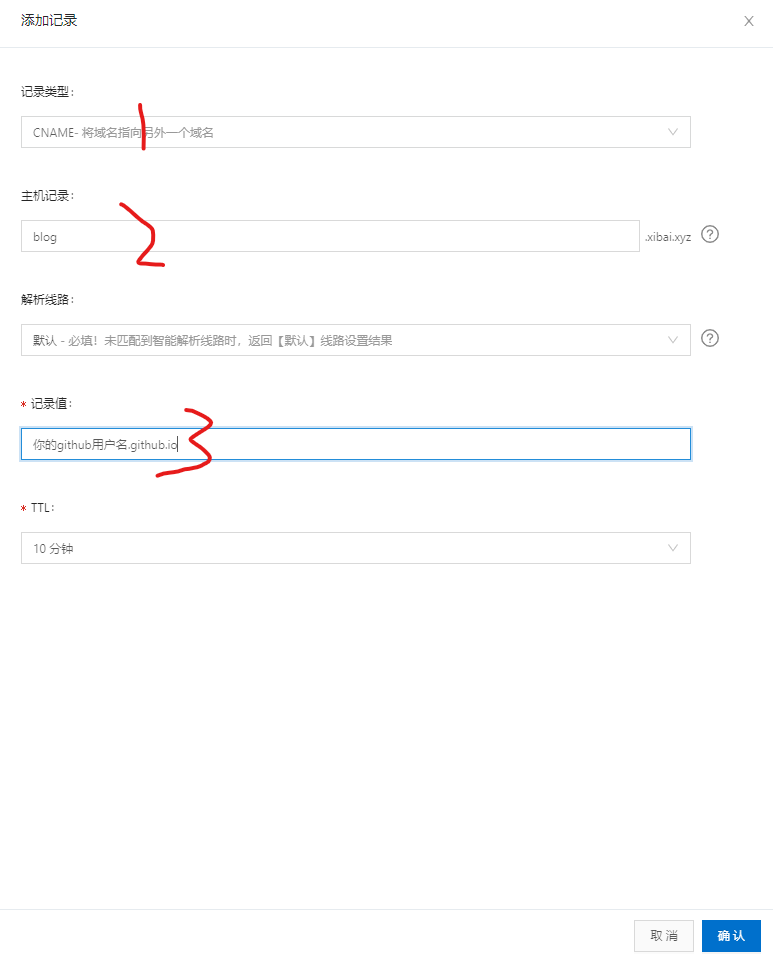
可选：云服务器
首先需要先去买一台云服务器。此时此刻，我写下这句话时，腾讯云为抢占客户实施大促销，2核4G；80G云盘；10M带宽的云服务器222软妹币/3年。没有遇到促销的可以选择腾讯云or阿里云的学生优惠。
修改超级管理员账户 root 的密码为自己记得住的密码，初始密码为随机密码。

记得设置服务器的安全组规则or防火墙规则，开放基础端口，比如 80 ，443 。
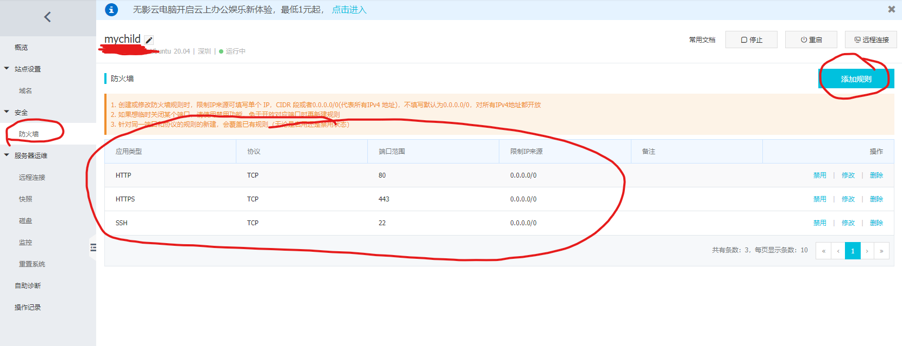
将自己的域名解析到刚买的云服务器：
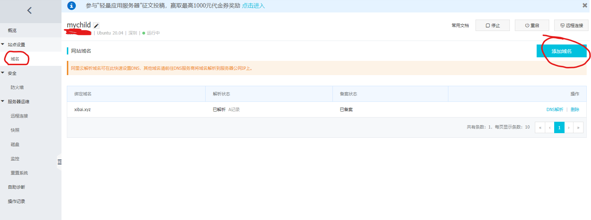
环境配置
通过 SSH 连接上去，开始按以下顺序执行命令：
1 | apt update && apt upgrade -y |
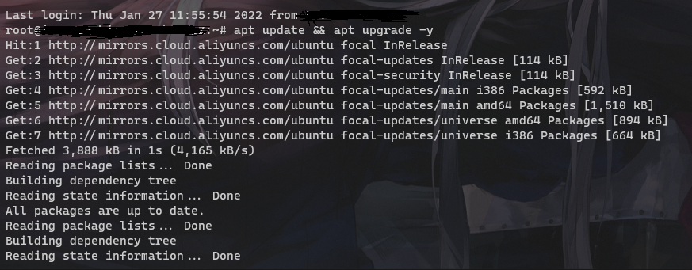
- nginx，git 安装
1 | apt install git nginx -y |
- nodejs 安装
注意这里执行的命令中，https://deb.nodesource.com/setup_??.x 有两个问号，这里问号代表版本，写到这里时，官网已经出到了第17版
1 | curl -fsSL https://deb.nodesource.com/setup_??.x | sudo -E bash - |
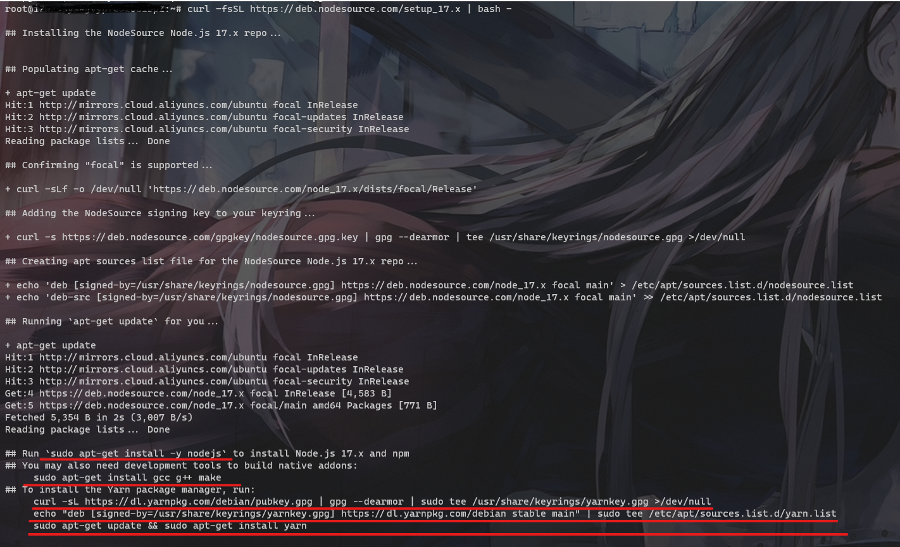
接下来执行红线画住的命令：
1 | apt-get install gcc g++ make |
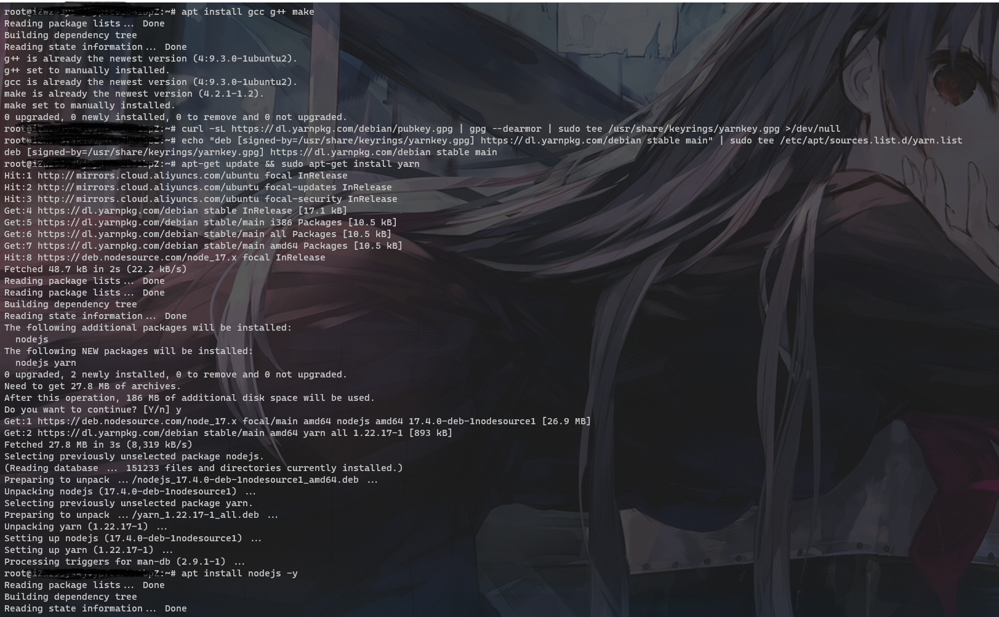
- 配置
git用户
- 添加
git用户
1 | adduser git |
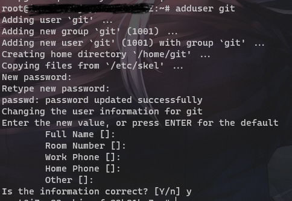
- 设置
git用户权限
1 | vim /etc/sudoers |
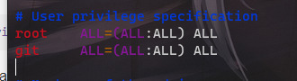
在上图位置添加 git ALL=(ALL:ALL) ALL：（vim下，先按一下 i 才能编辑，编辑完毕后按 Esc，退出编辑模式）
然后通过以下组合键保存退出：
先按 shift+；
此时左下角会出现如图所示的小冒号：
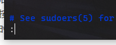
然后依次键入：wq!，回车保存退出
- 配置
SSH免密登录
切换到git用户:su git
创建.ssh文件夹：mkdir /home/git/.ssh
然后将本机的SSH公钥写入到该目录中：scp C:\\Users\\你的本地电脑用户名\\.ssh\\id_rsa.pub git@你的服务器ip或者绑定的域名:~/.ssh/authorized_keys
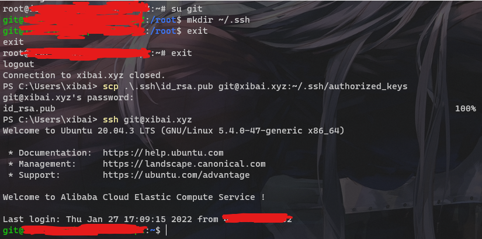
- 配置 nginx
新疆博客网站对应的配置文件
1 | vim /etc/nginx/conf.d/blog.conf |
输入以下内容：
1 | server{ |
然后删除nginx的默认页面创建上面配置文件中写的博客目录文件夹执行以下命令：
1 | rm -rf /var/www/html && mkdir /var/www/blog |
- 创建git仓库并建立一个git仓库的钩子（hook）
1 | git init --bare blog.git |
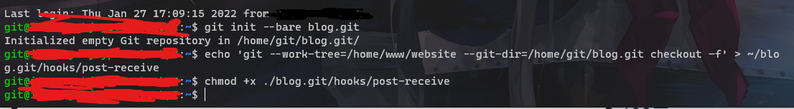
Hexo —— 本地Blog框架
安装
配置好 nodejs 环境和 npm 代理之后，一键安装：
1 | npm install -g hexo-cli |
安装 Hexo 完成后，请到想要存放博客文件目录的地方打开终端执行下列命令，Hexo 将会在指定文件夹中新建所需要的文件。
1 | hexo init <folder> |
新建完成后，指定文件夹的目录如下：
1 | . |
| 文件名 | 作用 |
|---|---|
| _config.yml | 网站的 配置 信息，您可以在此配置大部分的参数。 |
| package.json | 应用程序的信息。EJS, Stylus 和 Markdown renderer 插件已默认安装，您可以自由移除。 |
| scaffolds | 模版 文件夹。当您新建文章时，Hexo 会根据 scaffold 来建立文件。Hexo的模板是指在新建的文章文件中默认填充的内容。例如，如果您修改scaffold/post.md中的Front-matter内容，那么每次新建一篇文章时都会包含这个修改。 |
| source | 资源文件夹是存放用户资源的地方。除 _posts 文件夹之外，开头命名为 _ (下划线)的文件(夹)和隐藏的文件将会被忽略。Markdown 和 HTML 文件会被解析并放到 public 文件夹，而其他文件会被拷贝过去。 |
| themes | 主题 文件夹。Hexo 会根据主题来生成静态页面。 |
配置
先在blog目录下安装两个插件，在这里打开终端执行：
1 | npm install hexo-deployer-git --save |
可以在 _config.yml 中修改大部分的配置。
具体的详细信息参考官网文档：https://hexo.io/zh-cn/docs/configuration
这里给出我用的默认配置，记得修改关键信息为自己：
1 | # Hexo Configuration |
使用
在本地blog目录下打开终端：
- hexo clean：清除本地历史生成的网站文件（其实就是清楚本地blog网站缓存）
- hexo g ：生成blog网站文件
- hexo d ：将本地的blog网站文件推送至云端
- hexo s ：在本地启动一个blog云端模拟环境，可以在本地先查看blog生成后的样子
一般就是运行：
1 | hexo clean |